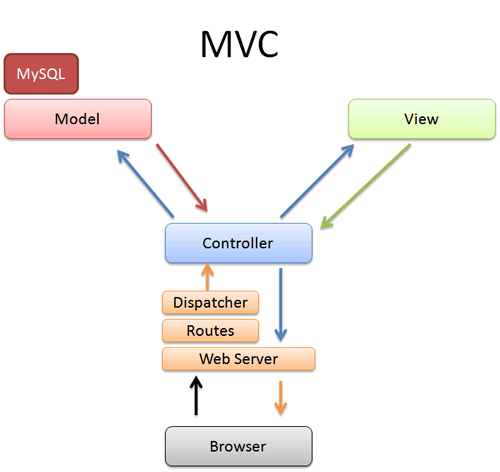
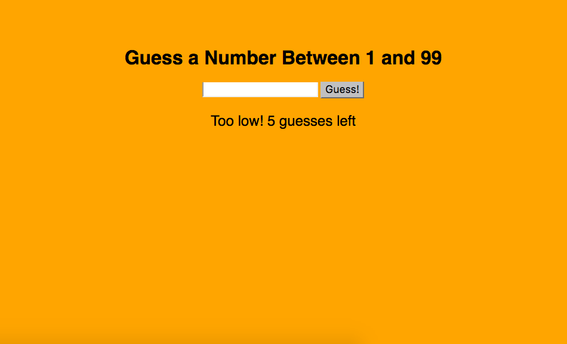

The Odin Project Blog Post 16
Week 16 - Changing the Layout
The latest chapter in Michael Hartl’s Rails tutorial covered several new topics dealing with the organization of our code and display of our application. Some things were new to me while others refreshed my memory. For instance, we used CSS’s bootstrap framework to begin styling the pages. Though I’ve worked with bootstrap before, I learned how to organize the SCSS rules so that they are nested. We also learned how to use partials to declutter our layout file. I had a very brief encounter with partials while I studied Node, but this lesson deepened my understanding of the topic. Once our partials were laid out, we changed our get routes so that they would route to /home instead of /static_pages/home, /about instead of /static_pages/about, etc. To figure out if all this was working properly, we ran our first integration test. At the risk of spending too long or writing too much, the focus of the rest of this post will be on partials and how they fit into the layout file.
Within our application file structure, there is a folder in our views directory called ‘layout’. It is in this layout directory that the Rails magic occurs for the V section of the MVC flow. If we have the same piece of HTML across several pages of our site, instead of writing it out each time we make a new page, we simply have it render in the main file of the layout directory. Last week, we grazed the surface of this by sticking the <title> for each of our static_pages in the /layouts/application.html.erb file. We also learned how the yield statement is used to display what is in each static_page. This week, however, we ramped it up by creating ‘partials’ for a header, footer, and assets, and then having them render in our layout. This is the end result of the layout:
/views/layouts/application.html.erb
<!DOCTYPE html>
<html>
<head>
<title><%= full_title(yield(:title)) %></title>
<%= render 'layouts/rails_default' %>
</head>
<body>
<%= render 'layouts/header' %>
<div class="container">
<%= yield %>
<%= render 'layouts/footer' %>
</body>
</html>
First, we'll go over the code that displays our <title>. It should be evident what we have here is a function named full_title taking the parameter :title and yielding it (i.e. displaying it to the page). This is that full_title function; currently sitting in the helpers folder:
/apps/helpers/application_helper.rb
module ApplicationHelper
# returns full title or base title if none given
def full_title(page_title = '')
base_title = "Ruby on Rails Tutorial Sample App"
if page_title.empty?
base_title
else
page_title + " | " + base_title
end
end
endIt does precisely what the comment says it does. At the top of all our static_pages, there is a provide statement that tells Rails what the :title of the page is. This title gets plugged into the full_title function and the result is yielded to the page. If the page has no title (currently only the home page), than the base_title is all that gets displayed. Next we can dicuss how our partials are rendered.
render is a Rails helper method that looks for a file with the name you give it, evalutes its contents, and inserts the results into the view. As you can see, the main body of the page is going to be displayed by yield which is sandwiched by our header and footer partials. Let's take a look at 'layouts/header' as an example of a partial.
/views/layouts/_header.html.erb
<header class="navbar navbar-fixed-top navbar-inverse">
<div class="container">
<%= link_to "sample app", root_path, id: "logo" %>
<nav>
<ul class="nav navbar-nav navbar-right">
<li><%= link_to "Home", root_path %></li>
<li><%= link_to "Help", help_path %></li>
<li><%= link_to "Log in", '#' %></li>
</ul>
</nav>
</div>
</header>
It is common practice to have a sitewide header and footer, therefore these partials are a good habit to adopt. A few points are necessary to mention about this file. First, we can see from the top of the code that the file needs to be within the layouts directory for the render method to find it. Second, partials are distinguishable by the underscore that leads their filename. The other partials we are rendering work similarly to keep application.html.erb clean of too much raw html. The rails_default file just contains our JavaScript and CSS links, while the footer looks comparable to the header. In the same way our header uses link_to to navigate to the home and help pages, the footer uses link_to to take users to about and contact.
The "Log in" page hasn't been created yet, and routing to named routes as well as the testing of all this stuff are topics for another post.
April 27 2017
- Read TOP SQL section
- Began SQLCourse.com SQL tutorial
April 26 2017
- Continued work on sample app
- Made CSS sassy
- Made link_to links named routes
- Added first integration test
April 25 2017
- Read TOP's views section - including Rails Guide Layouts and Rendering
- Read TOP's asset pipeline section - including Rails Guide The Asset Pipeline
- Completed "rest-tester" RestClient app GitHub
- Began work on Bootstrapping sample app
April 24 2017
- Completed blog post 15
- Updated weekly goals
- Read TOP's routers section - including Rails Guide Routing from Outside In
- Read TOP's controllers section - including Rails Guide Action Controller Overview
The Odin Project Blog Post 15
Week 15 - Controller Testing
Based on my previous tribulations with testing, I did not expect this week’s lesson to go as smoothly as it did. Looking over the test suite before I started, I got that familiar anxiety that Rspec gave me in the Ruby section. Then Rails worked its magic again, and almost all of my worries melted away. Entering rails generate controller StaticPages home help in the terminal created my controller test file for me, with the first two tests already written out!
One thing I did not mention in my MVC post last week was the role of routes in an application. Before I dive into the test file here, I think it would behoove me to explain the router.
/config/routes.rb
Rails.application.routes.draw do
root ‘static_pages#home
get ‘static_pages/home'
get ‘static_pages/help'
end
Yet another file created by the generate command, is the routes.rb file shown here. Depending on the parameters given to generate determines what Rails will put in the router for you. In this case, because generate controller StaticPages home help created a controller with methods for a static home page and a static help page, routes.rb routes to those pages with the GET http verb. This is something that gets tested, and will be modified when testing a new page.
/test/controllers/static_pages_controller_test.rb
require 'test_helper'
class StaticPagesControllerTest < ActionDispatch::IntegrationTest
test "should get home" do
get static_pages_home_url
assert_response :success
end
test "should get help" do
get static_pages_help_url
assert_response :success
end
end
Here we have the test suite for our controller. When we run rails test in the terminal, this code tests that our controller is functioning properly. Each of the two test functions here gets its appropriate url and asserts (via the assert_response method) that the connection is a success. It is literally saying "Let’s test the Home page by issuing a GET request to the Static Pages home URL and then making sure we receive a ‘success’ status code in response." If the controller is working as it should, the test will pass. With the hard part done for me, in order to create an About page, all I needed to do was copy what Rails had already given to me.
test "should get about" do
get static_pages_about_url
assert_response :success
endIn the way of TDD, first we write the test to fail. The reason it gives us for failure is that it could not GET static_pages_about_url. Thus, we make this connection in our routes.rb file by adding get static_pages/about to the list of routes. If we run the test again, it fails because the 'about' command couldn't be found in the StaticPagesController.
/controllers/static_pages_controller.rb
class StaticPagesController < ApplicationController
def home
end
def help
end
def about
end
end
Here in the controller file sit the methods that invoke the respective pages we have created so far. Home and help were created automatically with the 'generate' command, while the about method needed to be added manually. If we run the test now, the terminal tells us it is missing a template for the request. What the test needs to pass is a file in the views directory to show to the screen when the controller makes a request to the about page.
$ touch app/views/static_pages/about.html.erb
This is the final step in the MVC flow, and the only code that actually gets rendered for the browser to see. Within it we can include embedded Ruby to DRY out our code, but for now I will just include some HTML.
/views/static_pages/about.html.erb
<h1>About</h1>
<p>
The <a href="http://www.railstutorial.org/"><em>Ruby on Rails
Tutorial</em></a> is a
<a href="http://www.railstutorial.org/book">book</a> and
<a href="http://screencasts.railstutorial.org/">screencast series</a>
to teach web development with
<a href="http://rubyonrails.org/">Ruby on Rails</a>.
This is the sample application for the tutorial.
</p>
Finally, if we run rails test one more time, we should get 3 tests, 3 assertions, 0 failures, 0 errors, 0 skips, and a fully GREEN test; which means our controller is finally working as it should be. But running a rails server and navigating to the About page just to be sure is always good idea.
April 19 2017
- Completed sample app
- Continued to work on WordPress site
- reddit thread self-taught programmer asks about algorithms
April 18 2017
- Began sample app project - worked on testing suite in Rails
- Began work on portfolio site kyletsheehan.wordpress.com
- Attended first Philly.rb meetup
April 17 2017
- Updated weekly goals page
- Read TOP's Deployment page
- Completed 1/2 of Project: Web Refresher - RestClient
r = RestClient.get('https://www.bing.com/', params: {q: 'coding jobs'})
r.code
r.headers
r.body
The Odin Project Blog Post 14
Week 14 - Beginning Rails and MVC
While I could spend this post writing about something I have a stronger grasp of, like the Hangman project I completed using Sinatra earlier in the week, there are two reasons I’m not going to do that. First, though that program vastly out-scopes what I wrote about last week, I would more or less be rehashing the main points of routes and views in the Sinatra framework. Second, one of the main reasons for these posts is so that I can further my understanding of difficult concepts via writing. That is why I’m choosing to write about the second “project” I finished this week. It was the second Rails tutorial TOP has led us through. However, this one actually felt like it was laying an educational foundation to build upon. From the very limited exposure I’ve had to the magic of Rails so far, I will attempt to explain what I picked up.
Something that always intimidated me about Rails was the amount of files and folders that come along with a single application. I thought to myself I’d never be able to learn this because there’s just too much stuff and I’d never be able to keep it all straight. Alas, the file directory of the app is split up deliberately to be very well organized. Until now I had no idea the rhyme or reason, but TOP and Michael Hartl’s tutorials do a thorough job of breaking it down and explaining it all. Rails apps follow a Model View Controller structure. Every application has a models, a views, and a controllers directory - each with a specific job. Once you understand the purpose of MVC, the mist surrounding Rails starts to clear. MVC is not only integral to understanding Rails but web development as a whole, and I will attempt to explain it here:
Obviously, it all starts at the user’s computer, when a request is made from the browser. Ignoring the server and router right now, this information gets parsed by the controller which asks the model for any data or other information it needs. The model is the one that connects to the database, stores or validates data, and does the heavy lifting. The info then gets returned to the controller which gives it to the view; where it gets turned into something to be displayed back to the user. The view is where you find the html and erb. It has no idea what to display until the controller fills it in. Once this has been done, it is finally returned through the controller as a web page back to the browser. Simple! So how does this apply to what I built this week?
toy_app/app/controllers/user_controller.rb
class UsersController < ApplicationController
before_action :set_user, only: [:show, :edit, :update, :destroy]
# GET /users
# GET /users.json
def index
@users = User.all
end
# GET /users/1
# GET /users/1.json
def show
end
# GET /users/new
def new
@user = User.new
end
# GET /users/1/edit
def edit
end
# POST /users
# POST /users.json
def create
@user = User.new(user_params)
respond_to do |format|
if @user.save
format.html { redirect_to @user, notice: 'User was successfully created.' }
format.json { render :show, status: :created, location: @user }
else
format.html { render :new }
format.json { render json: @user.errors, status: :unprocessable_entity }
end
end
end
# PATCH/PUT /users/1
# PATCH/PUT /users/1.json
def update
respond_to do |format|
if @user.update(user_params)
format.html { redirect_to @user, notice: 'User was successfully updated.' }
format.json { render :show, status: :ok, location: @user }
else
format.html { render :edit }
format.json { render json: @user.errors, status: :unprocessable_entity }
end
end
end
# DELETE /users/1
# DELETE /users/1.json
def destroy
@user.destroy
respond_to do |format|
format.html { redirect_to users_url, notice: 'User was successfully destroyed.' }
format.json { head :no_content }
end
end
private
# Use callbacks to share common setup or constraints between actions.
def set_user
@user = User.find(params[:id])
end
# Never trust parameters from the scary internet, only allow the white list through.
def user_params
params.require(:user).permit(:name, :email)
end
end
This is my controller for the toy app I created. It contains the most code by far out of the models/views/controllers files. This makes sense because it is the core of the application, and needs to handle requests from the client. In this case, we can see the typical CRUD methods (create, edit, update, destroy) for a user page (think create/edit/delete user). Once one of these methods is invoked, the controller checks with the model for anything it needs.
toy_app/app/models/user.rb
class User < ApplicationRecord
has_many :microposts
validates :name, presence: true
validates :email, presence:true
end
Here we have just 5 lines of code that make up the user model of my application. It allows each user to have multiple posts and requires that a user have a name and an email in order to be validated. If what the client entered in his/her browser meets the requirements here, a new user is added to the database. When the model is done with its job, the data can be sent to the view to be made ready for the screen.
toy_app/views/user/index.html.erb
<p id="notice"><%= notice %></p>
<h1>Users</h1>
<table>
<thead>
<tr>
<th>Name</th>
<th>Email</th>
<th colspan="3"></th>
</tr>
</thead>
<tbody>
<% @users.each do |user| %>
<tr>
<td><%= user.name %></td>
<td><%= user.email %></td>
<td><%= link_to 'Show', user %></td>
<td><%= link_to 'Edit', edit_user_path(user) %></td>
<td><%= link_to 'Destroy', user, method: :delete, data: { confirm: 'Are you sure?' } %></td>
</tr>
<% end %>
</tbody>
</table>
<br>
<%= link_to 'New User', new_user_path %>
Without getting bogged down on the details of the code within this file, it is just important to know that whatever method the client invoked in the controller was validated by the model and will now be transmitted as html via erb in the view. If we choose to create a user, the model validates the name and email, and the view shows us a new user. If we choose to destroy a user, the controller goes to the model which finds the user in the database. The view asks if we are sure. If we say yes, the controller tells the model to delete that user from the database, and the view shows us a page without that user.
April 13 2017
- Completed Toy App Hartl tutorial Heroku GitHub
- Read the a Railsy Web Refresher section on TOP
- Read the Deployment section
April 11-12 2017
The Odin Project Blog Post 13
Week 13 - Sinatra
One of the things I remember from the brief look at Ruby on Rails I got in the Web Development 101 section of TOP was how much of the app is created for you when you simply type rails generate in the terminal. Because of how much of the “dirty work” is taken out of your hands, Rails can be perceived as having a magical quality to it which may lead to a fundamental misunderstanding of what is happening under the hood. To avoid such misconception, TOP first introduces us to Sinatra. Sinatra is a lightweight Ruby framework that doesn’t put together the complex file structure of a web application for you. Learning how to set up routes and connect them with views on our own sort of demystifies the magic of Rails, and in theory, should reduce the learning curve.
This isn’t to say that Sinatra in itself is nothing but a stepping stone. Though it is relatively simple, in that there isn’t a whole to it, there are some cool things TOP had us do with it right off the bat. Before tossing us into the deep end, we were to follow a tutorial from Jumpstart Labs to create a pretty simple random number guesser game. Using the concepts from this tutorial, we then were asked to convert a couple of old projects into Sinatra applications - the first being the caesar cipher function.
/caesar_cipher/caesar_cipher.rb
def caesar_cipher(string, num)
@cipher = ""
string.each_char do |ch|
ch = ch.ord
if ch.between?(97, 122) || ch.between?(65, 90)
ch += (num % 26)
elsif ch > 122 || ch.between?(90, 97)
ch -= (num % 26)
end
ch = ch.chr
@cipher << ch
end
@cipher
end
get '/' do
string = params["string"] || ""
num = params["num"].to_i
@cipher = caesar_cipher(string, num)
erb :index, :locals => { :cipher => @cipher }
end
The portion of the code to focus on here is the get block at the bottom. This is known as the route. When nothing is specified after the '/', it automatically looks for the views folder in the same directory. The line starting with erb tells the block to look for the file named 'index' and then names what variable(s) are used from this file in that index file. In this particular case, I only use the @cipher variable in my index.erb file.
/caeser_cipher/views/index.erb
<html>
<head>
<link rel="stylesheet" href="styles.css" />
</head>
<body>
<form>
<h1>This is the Caesar Cipher</h1>
<p>Type a string you'd like to cipher:</p>
<input type="text" name="string" />
<p>Type how many letters you'd like it shifted:</p>
<input type="text" name="num" />
<br>
<input type="submit" value="cipher!" />
<p>Your ciphered string: <%= @cipher %></p>
</form>
</body>
</html>
Why does this look like an html file but it's labeled .erb? .erb stands for embedded Ruby, and essentialy means exactly that. It has Ruby from the get block in the route embedded within it. Likewise, the .rb file uses the user input taken from the text inputs here. What gets entered here becomes the parameters of the web address. Back in the get block, they're accessed via params["string"] and params["num"] because those are the names of the inputs. The params become the caeser cipher's parameters, and the @cipher decrypted variable gets returned to the .erb file.
This is a simple example because it is one method with one variable. I am currently working on converting my Hangman command line game, which so far has been a much tougher challenge.
April 6 2017
- Worked on converting Hangman game to Sinatra app
April 5 2017
- Watched 3 Sinatra screencasts on this site
- completed caesar_cipher Sinatra app
April 4 2017
- Completed Web Guesser App GitHub 
April 3 2017
- Updated weekly goals
- Worked on Sinatra web guesser app